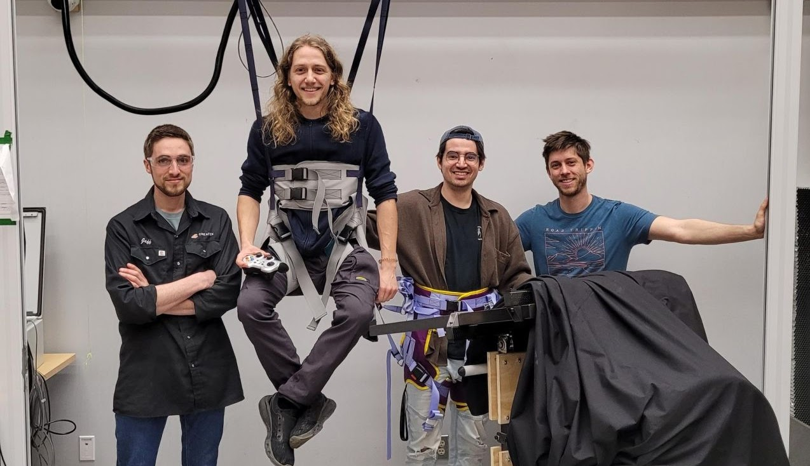

Abstract
The project to develop lifting robot assistants and an eco-system of devices for a smart hospital room concept that would release caregivers of time-consuming, low-value tasks and empower patients with mobility assistance features. The proposed assistance technology aims to address these two societal problems: 1) improving the caregivers' health and work-conditions with assistance scheme limiting the physical efforts during patient transfers and 2) improving the patients' care quality by facilitating occasions for them to move out of their bed.
We are actively recruiting for this project, we are looking for students interested in one or more of the following topics: developing intelligent algorithms for assisting motion in a hospital room, building novel hardware, developing human-machine interface, etc.
Publications & Resources
Project Media
